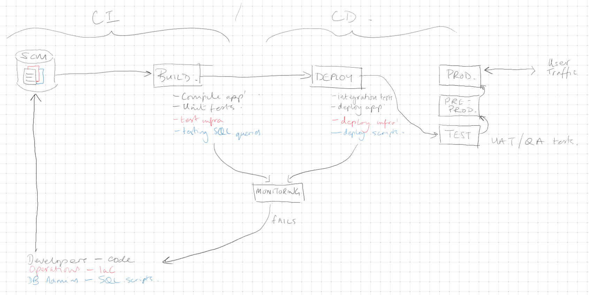

Welcome to Scout's website, it's just like Frankie's but a little looooonger
Since Frankie covered the HTML tag basics, I'll talk about the next steps in your project.
Our aim is to demonstrate that you know the concepts of a CI/CD pipeline and common architecture, as well as building practical experience with the required tools and services.

There's more than one way to create one, that's why it's important to understand the concepts, so that you can apply them using whatever tools you (or your employer) prefer.
In our case I've chosen some tools that are:
- Available through AWS/GCP
- Free/Cheap
- Easy to grasp
But the concepts are just the same as if I were using any industry standard tools, and going through this process will give you much better context and experience when speaking to employers.
So let's break down the plan a bit further. If you follow a full development lifecycle you would do some planning, including planning your architecture. A modern approach is to design your app's using a multi-tier architecture, with each app component residing in it's own subnet, with firewall rules managing ingress and egress traffic - this isn't a new concept to you, it's just the next step in a micro-service architecture. Typically you might have:
- Presentation tier - (web tier) typically a webpage or webapp, this is where the end user interacts with and initiates your application. If required, user inputs and options can be gathered here, and passed through to the next tier
- Application tier - (processing tier) this is where the work of the app is done. It may receive inputs, data, variables, etc. from the Presentation tier to work with. This tier may connect to the next tier to store or retrieve data.
- Data tier - (database tier) this is the app's data storage, often a database, but could be pretty much any data source.
Not every application needs every tier. If your app just stores and retrieves data you may not need any processing in the middle; if your app just receives, processes, and returns data, you may not need a separate storage tier.
We're going to focus upon 2x tiers, Presentation and Application. If you're feeling ambitious, feel free to plan for a Data tier too, in fact I'd encourage it. But you'll find it difficult, and you'll gain a renewed appreciation for why Solution Architects, Software Developers, and Database Adminstrators are separate job roles!!!
We've started our Presentation tiers with your websites, and the most relevant options for hosting them are of course Amazon S3 or GCP Cloud Storage.

Our application tiers can start with simple 'hello-world' functions, again using the platform specific options, Lambda or Cloud Functions.
Once these are in place we need to connect them, in GCP you'll receive a URL to call your function, which can be embedded into your HTML. In AWS you'll need to deploy an API using API Gateway.
A website and a function don't make a pipeline, so we need to automate the process of deploying updates. As we mentioned on the slides, we're going to use a GitHub repository for our code, and to track changes. Then we'll use GitHub Actions to automate our 'update website' workflow. GitHub Actions provides 2000 free minutes per month, which is plenty.

Next steps:
- Create repository and upload html/css/media files
- Create a .github/workflows directory in your repository.
- Create a YAML file in the new directory (e.g., deploy.yml) to define your workflow. Use AI to help generate the deployment file, or ask Ant for his as a template.
- Continue developing your website, committing your changes to your repository as you would in the workplace.
- Create a webform with a submit button on your site which calls your API, which in turn calls your function.
When you reach this point you have a complete, albeit basic, CI/CD pipeline. You should ensure that you can explain what you've done, and think about how you can improve it.
This is what your architecture will look like [IMG]
You might have spotted a problem with the CSS rules. What if we wanted to apply rules to individual elements, rather than all h1 elements, or all divs. To do this we assign a CSS class to our html tags, and then refer to those tags in our CSS rules declared in the head block. These images below show the div tags with classes, the CSS rules with class selectors, and the different output in the browser: